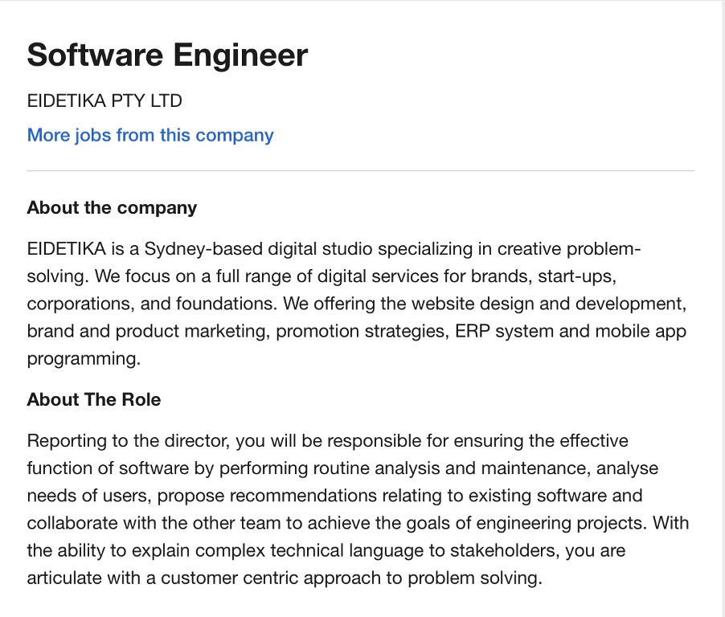

My name is Jordan Elkin I am a current serving member within the Australian Defence Force and have a strong interest within the IT field. Previously I have studied Web Design and Basic Programming in my own time through self-directed learning. I am an Australian and am able to speak both English and German. My email and student number are: Email: s3731867@student.rmit.edu.au.
I have always had a keen interest in IT while growing up and have always had a desire to understand why things work the way that they do. Thus, my core interest within IT is Software Development and the Software Engineering aspects of IT. This is because I enjoy problem solving and creating solutions to problems with the use of software. Furthermore, I have further interests in Cyber Security and Networking. This is because, these fields are rapidly growing and changing and I believe; allow for continual progression within these fields due to increasing need for more people in this area of IT.
Moreover, I chose to continue my studies in Information Technology with RMIT because, with my current lifestyle it is difficult to go to a University Campus and RMIT offers one of the best IT courses externally. Through studying at RMIT I hope to increase my knowledge in the Information Technology space and be able to narrow down which career path to specialise within.

The above Job advertisement from seek.com.au is what I deem to be my ‘dream’ or ‘ideal’ future job role. This is a job role as a Software Engineer working within a company that provides services for start-ups and other corporate entities. This role is appealing to me because it is multifaceted; meaning that there are many different aspects of programming and development that can be achieved through this job role. However, as this role is only an Entry-level position the experience and qualifications required are obtainable through finishing a Bachelor of Information Technology or equivalent. Although, experience in the field of web design using web technologies such as HTML5 and CSS and also general programming (i.e. learning how to use Java, and C/C++ proficiently) would be an advantage in securing this job in the future (Top software engineer skills for today's job market, 2020). This will be achieved through online courses that are provided by RMIT and other institutions that provide training in these areas
The results from the Myers-Briggs test was Assertive Logistician meaning that there is a, preference in making an analysis of the surroundings before making assumptions and also a preference in taking practical courses of action (16Personalities, 2020). This translates well into team forming where the project requires a high degree of analysis of the information. This is because this particular personality type excels in the analysis of information and fact checking. However, due to the individuality aspect of this personality type care must be taken to ensure that there is a high level of integration within the team. This integration can be achieved through task setting which will fulfil the individuality aspect and ensure successful integration within the team environment.
Moreover, from the Learning Styles test, a result of Auditory/Tactile learner was achieved (What's Your Learning Style? 20 Questions, 2020). This means that the best way that I learn is through both listening to someone about the topic and then also by doing which further reinforces the information learnt. The impact of that this will have on the formation of teams is that, there will need to be an explanation of what will need to be done and also, an example provided to ensure that the information is fully understood. Furthermore, the impact on my behaviour due to this result would be that more questions about topics would be asked to ensure full understanding. Moreover, due to the test result I will also be more inclined in wanting physical demonstrations of what needs to be achieved. This may lead to myself creating demonstrations to present to the group in order to reinforce understanding, that may not have been fully grasped through listening.
Furthermore, according the results gained from the Big Five Personality Test given by Truity; I received a result of 75% for openness, 87.5% for conscientiousness, 46% for extraversion, 60% for agreeableness, and 23% for neuroticism. This means, I am open to new ideas, have a high level of self-discipline (which translates to a high rate of goal achievement), do not require much stimulation from the outside world, and do not experience many negative feels thus allowing for an increased focus on tasks (The Big Five Personality Test, 2020).
The impacts this has on my behaviour within the team environment is, I will be open to taking on new ideas and then working hard on ensuring that goals and tasks are met on time. However, due to my lack of extraversion and average level of agreeableness I will need to ensure more effort is given to communicating with the team and not being unreasonable with group ideas. Furthermore, the impact on the considerations when forming teams will be to find other individuals with the same level of openness and conscientiousness. Otherwise this may lead to future conflicts within the group that will need to be rectified. Moreover, I will need to exercise more effort in forming a team due to my lower level of extraversion.
Overview
My current project Idea is to create an all in one fitness app that allows people to track and monitor their fitness goals. This app will provide users with advice on workouts and also track their calorie intake. The workout advice contained will be in the form of tailored, custom workout plans. The app will track fitness goals by storing information such as, weights that the user is lifting, repetitions of each exercise, and also the amount of sets. These will also be customisable if the user does not wish to use the default amounts in the workout plan.
Motivation
Even though there are many fitness apps and tracking apps available on smartphones, many either have missing features or require that users download additional ‘companion apps’ to gain use of all the features that they require. My motivation in creating this product is to ensure that the user has a streamline, and simple experience that does not require any additional apps or monthly subscriptions. Thus, making it more likely that users will continue to engage with the app and complete their fitness goals.
Description
This app is split into three major components, which provide the user the entire experience these are; The fitness plan component, fitness tracking component and the calorie tracking component.
The fitness plan component provides the user detailed, custom information based upon the needs of the user. This information is gathered through information given by the user to the app. The information required to be gathered is, whether the user is looking to lose weight or build muscle or both. Additional information that is required to be inputted by the user includes height, weight, age and their experience with exercising (i.e. whether they are a beginner, intermediate or advance). This is required as the application will not be able to provide plans that a user will be able to follow accurately if not provided (e.g. if a beginner to exercising is given advanced exercises to complete they may become frustrated with the difficulty and not wish to continue). Moreover, the user will also have the ability to swap exercises within their plan if the exercise is too difficult or too easy. They will also have the ability to change repetition ranges, set amounts and weights that they are using. Furthermore, the user can also opt to create their own custom plans and this will also be supported with all of the tracking components.
Moreover, the fitness tracking component of the app takes user data such as; repetitions, sets, weights, types of exercises and frequency that the user exercises per week. This information is stored locally on the device and is displayed to the user with graphs and tables. This is to ensure that the user is able to track their progression easier by having a graphical representation of how they have performed overall. Furthermore, the app will also be able to calculate the weight that a user is lifting by allowing the user to enter this information with easy to use plate graphics. This feature will allow for the accurate tracking of the users’ progress.
Furthermore, the calorie tracking component allows for the user to quickly enter the foods that they are eating. This assists the app in ensuring that the user is tracking to achieving their fitness goals. This is because if a user is looking to lose weight then they will need to ensure that they are maintaining a caloric deficit. However, if a user is looking to build muscle and gain weight then they will need to ensure that they do the opposite. This component will be able to adapt itself to user needs by giving the user a calorie goal that they will need to meet in order for them to achieve their goals.
Tools and Tech
In order to fully develop this project, tools and technologies from Apple and Google will be required in order to bring this App to both the Apple and Google ecosystems. These tools are in the forms of Standard Development Kits for both mobile platforms. This consequently requires computers that are capable for developing on these platforms. Especially in the case of developing for Apple Devices since an Apple computer is required in order to get full development support from Apple in the form of XCode (Develop - Apple Developer, 2020). As a result, knowledge of the Objective C language or Swift is required to fully develop for this platform. Moreover, in order to produce this application on the Google Android ecosystem Google Studio will be required and as well as knowledge of Java and XML for programming the User Interface (Google Android Studio, 2020). Furthermore, tools such as MongoDB will also be required as this tool provides an easy solution in creating Data Bases that store user information for use with this application (MongoDB Atlas: Cloud Document Database, 2020).
Skills Required
The skills required to fully implement this project is experience in Programming within Java, Objective-C, Swift and also XML mark-up languages. This is because this project is aimed to roll out across two different mobile platforms. Thus, the project will have to be written in the programming languages for each of these platforms (i.e. Objective-C and Swift for iOS and Java and XML for Android). Moreover, knowledge of both of the Integrated Development Environments (IDE) is required as well in order to produce the app.
Furthermore, Skills within animation, video editing, photo editing and also User Interface are a requirement for successfully completing this project. This is because this product is designed to be interactive and without these skills the project cannot be fully created to the given specification outlined in the description.
Moreover, skills within Data Base creation and security is required in order to store user data on the mobile devices. This is due to both ecosystems requiring developers to ensure that their apps store user data in a secure and efficient manner.
Outcome
Upon the successful completion and distribution of this application this will solve a huge dilemma for consumers when it comes to fitness applications. This dilemma being that many other fitness solutions are fragmented requiring that users utilise additional companion applications. This application will also tie together many missing features that have been promised within other applications. Furthermore, this development will have significant impacts upon the ‘app market’ in that, developers will have to increase their quality of products to match this one in order continue to remain competitive. However, this may also result in other ‘clone’ applications that attempt to mimic the behaviours of the application was produced.
SEEK. 2020. [online] Available at: https://www.seek.com.au/job/51117822?type=standard#searchRequestToken=62286c0c-6648-4097-8a66-e338e98ad5d8> [Accessed 13 December 2020].
Monster Career Advice. 2020. Top Software Engineer Skills for Today's Job Market. [online] Available at: https://www.monster.com/career-advice/article/software-engineer-skills> [Accessed 13 December 2020].
16personalities.com. 2020. 16Personalities. [online] Available at: https://www.16personalities.com/istj-personality> [Accessed 13 December 2020].
Educationplanner.org. 2020. What's Your Learning Style? 20 Questions. [online] Available at: http://www.educationplanner.org/students/self-assessments/learning-styles-quiz.shtml?event=results&A=7&V=6&T=7> [Accessed 13 December 2020].
Truity. 2020. The Big Five Personality Test. [online] Available at: https://www.truity.com/personality-test/17315/test-results/30251951> [Accessed 13 December 2020].
Developer.apple.com. 2020. Develop - Apple Developer. [online] Available at: https://developer.apple.com/develop/> [Accessed 13 December 2020].
2020. Google Android Studio. [online] Available at: https://developer.android.com/studio> [Accessed 13 December 2020].
MongoDB. 2020. Mongodb Atlas: Cloud Document Database. [online] Available at: https://www.mongodb.com/cloud/atlas/lp/try2?utm_source=google&utm_campaign=gs_apac_australia_search_brand_atlas_desktop&utm_term=mongodb&utm_medium=cpc_paid_search&utm_ad=e&utm_ad_campaign_id=1718986513&gclid=Cj0KCQiA8dH-BRD_ARIsAC24umZHF2kXAgfapsbX1wM-odNEUNcYcbnGuXbIr-62alHM402tuZh8y6UaAiMDEALw_wcB> [Accessed 13 December 2020].